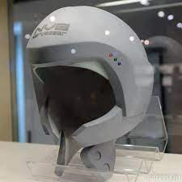

Products
| Picture |
Name |
Cost |
Description |
|  |
NerveGear |
$99.90 |
The NerveGear's high-density microwave transceivers are capable of accessing the user's brain, allowing it to send fake signals to the five senses of the user. The transceivers are not only capable of inducing fake sensory signals but can also block every movement command from the brain to the body, preventing the player from moving their body while in FullDive to avoid injuries. The transceivers are also capable of blocking sensory information from the body to the brain, thus, while using it, the player is completely insensate to the physical world. To use the NerveGear, the player wears the game console over the head. Then it is recommended for the player to find a comfortable position to station the body, commonly a bed. Afterwards, the game will load upon utterance of the initiation words, "Link Start". |
 |
Project Poison |
$299.90 |
Feast your eyes on the phenomenal Project Poison. Housed in the HYTE Y60, this water-cooled gaming PC is a stunning showcase of high-end hardware and Infin8 style. This gaming PC is equipped with 13th generation Intel, NVIDIA 40 Series technology, and the latest standard in memory, DDR5. With its bold green aesthetic and panoramic glass panel, you can enjoy the view as much as the elite-tier gaming. |
|
HoloArm |
$49.90 |
The HoloArm is a projector within a watch. It is very similar to a phone but it blocks everybody except the wearer from watching. This helps to improve the security of others and it has unlimited storage so that you can store as much as you want. |